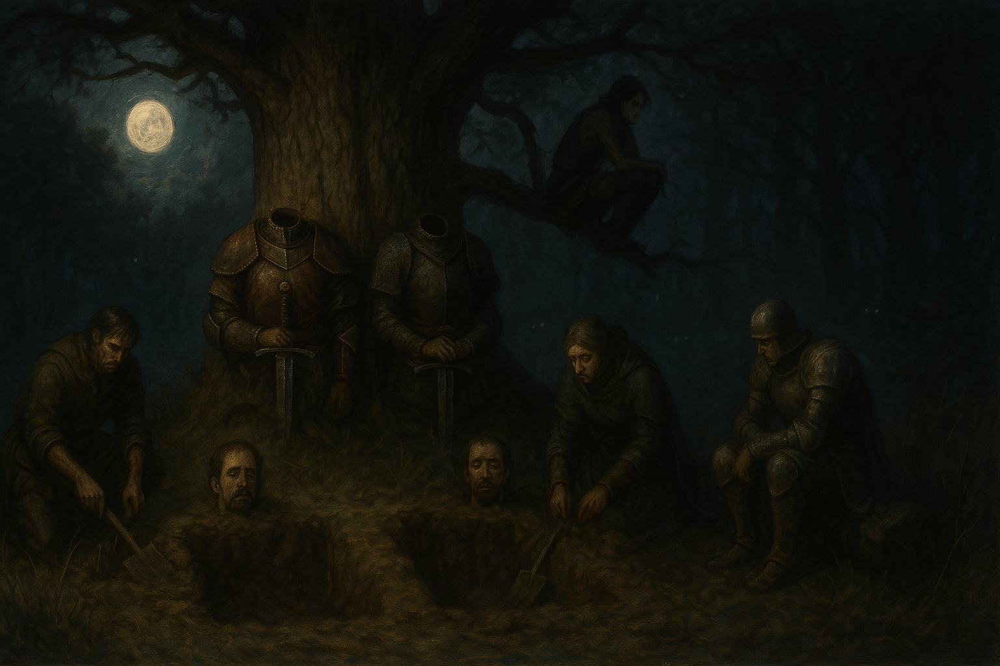

Chapter 5: The Aftermath
The Blooming of Macksohn


The Blooming of Macksohn
15048.11.14
那人喚了雷米，雷米便睜開了雙眼。映入他眼簾的是柏納斯家的傳人蘭斯。蘭斯將雷米帶到了另一間看起來像武器房的房間，將他手腳撐開綁住，接著便讓雷米好好在這過夜休息。
15048.11.15
經歷了比武大會的慘劇，這一夜，台北市議員因為疲憊，而睡得很沉。天亮了，離去的三人：安納戴克、家亨，以及雷米依然沒有回來。
透過魔法，米多莉這次選擇追蹤安納戴克一直掛在胸前的「神王的指引」。有別於上次搜尋大砍刀，沒能找到，米多莉發現「神王的指引」出現在西北方，麥克嵩城外的一處。經過調查，那裡是個叫朗甫頓的荒涼城鎮，於是台北市議員便立刻動身前往。
路途中，大家想尋找還有營業的雜貨店進行補給，但街道上所有的店家都被緊緊鎖上，甚至有居民持續從窗戶向外探查，似乎感到非常害怕。
對於無法進行補給，大家感到可惜，只好繼續往城門前行。然而，此時，身後傳來了一陣腳步聲。回頭一看，一個小孩子朝著台北市議員跑了過來，氣喘吁吁的。經過詢問，她自我介紹為波，是個七歲的小女孩。他從鄰居叔叔阿姨口中聽說自己的父母在昨天的比武大會中被殺死，而便是「台北市議員」這群人將競技場中的惡魔擊敗，才拯救了麥克嵩。波從口袋中掏出了台北市議員的懸賞單，表示自己現在無依無靠，希望可以加入台北市議員。同時，她原地開始拳打腳踢，想表現出自己是個即戰力。
台北市議員的想法分歧，由於波口氣不小，對幾位冒險者也不太禮貌，甚至得罪了帕拉丁爵士，包含帕拉丁爵士、YHWH等人對於波的加入十分不認同，唯有同為孤兒的米多莉和剛加入且心地善良的喜利希望能納波為同伴。討論過後，米多莉和喜利決定騎乘米多莉召喚的獒犬，載著波回到派頓，看看月先生和紫羅蘭等人是否能協助照顧波。
回到派頓，月先生表示自己無法協助照顧波；紫羅蘭則表示比起他照顧波，讓波在路上流浪可能生存的還要更好。另外，紫羅蘭也表示他預計會和弗列里夫婦一同前往寇林菲爾德，不繼續待在麥克嵩了。
接著，紫羅蘭表示剛剛有個王宮的信差來找受封為爵士的帕拉丁，將他要求王宮為他準備的地圖帶來了，於是紫羅蘭便將地圖交付給米多莉。
在離開派頓前，一個人按住了米多莉的肩。米多莉回頭，是蘿琳。聽聞大家要前往朗甫頓，先行離開麥克嵩後，蘿琳表示自己會想念龍恩，也計劃每天為他寫信。同時蘿琳取出了一段黃絲帶，請米多莉將它交給龍恩。
離開派頓後，米多莉和喜利載著波回到大家分散的地方。看見波依然跟著兩人，台北市議員們十分驚訝。米多莉表示月先生和紫羅蘭都無法收養他，於是計畫帶著波，將他帶回過去自己成長的津菈教護盾大教堂生活。
有些成員對這個做法不敢苟同，其中帕拉丁爵士十分不開心，對波口出惡言，對此，喜利十分不滿，擒抱住帕拉丁，要求他道歉，但帕拉丁完全沒有這個意思，甚至要求衛兵將喜利捆綁住，限制他的行動。
收到了蘿琳的黃絲帶，龍恩將它綁在自己的手腕上，作為紀念。
另一方面，雷米醒來後，發現蘭斯站在他身前。蘭斯帶了幾名壯碩的僕人，按壓住雷米的四肢，便開始拷問。雷米謊稱是帕拉丁爵士派遣他來暗殺柏納斯家族。蘭斯將胸前的一顆黑色且散發出紫色光芒的珠寶沒入雷米的胸前，雷米便感到如電流般的刺痛。蘭斯要雷米每晚睡前將當日的行動全數回報，而且不能做出任何對柏納斯家有害的行為，也不能將今天發生的任何事透露，否則他得付出極大的代價。
雷米點點頭承諾，並許了個願，希望能將他死去的朋友家亨刺青刺在自己身體少數沒有刺青的地方：他的胯下左側。經過一段時間，蘭斯找來了一個看起來十分害怕的刺青師，為雷米刺上了家亨的臉（並不像），以及一個J字。最後，蘭斯將雷米放了出去，並再次警告他，要他記得他答應的事。
追趕上了走到城門口的台北市議員，雷米向大家說昨晚三人離開派頓後，遭到群聚的惡徒圍毆，只有他逃了出來，家亨和安納戴克都死了。同時他也把自己最新的家亨刺青秀給大家看。
另一邊，城門外，一個穿著重甲的妖精女子和一個高大的半獸人女性向台北市議員攀談。妖精女子表示他叫墜兒，是家亨的青梅竹馬，要來尋找家亨的蹤跡。聽聞了家亨的死訊，他便決定加入台北市議員，為家亨復仇。另一位則是墜兒在冒險途中認識的夥伴，蘇加魯。
時間接近中午，眾人肚子餓了，便各自吃了不同的午餐。
為了找到家亨，墜兒也使用了定位術，找到家亨平時配戴的徽記在西北方。沿著城牆，眾人朝著西北方前進。在路程中，米多莉和YHWH因為對雷米說明昨晚事件的說詞頗有疑慮，對他更加嚴肅的詢問。在不透露過多細節的前提下，雷米調整說法，解釋家亨和安納戴克發生的事。
距離日落時間不久了，大家經過一處，左手邊開始出現聚落，而且有三五個居民在活動著。墜兒估算，大約再走一個小時就能到他感應到徽記的位置了。
遠方視野內出現了一棵大樹。走近後，樹幹的左右兩側各有一具斷頭的軀體。左邊的是家亨的身體，右手將安納戴克的頭按置在地上；右邊的是安納戴克的身體，左手將家亨的頭按置在地上。兩人脖子的切痕都十分平整，像是特別小心處理過的。同時兩人身上都穿著生前的衣著，也配戴著平常使用的武器。
強忍著悲傷，大家紛紛拿起可以使用的工具或武器，在兩個軀體前挖起地洞。薩梅爾坐在樹前休息，而龍恩則坐著祝禱，念念有詞。雷米爬到了樹上，朝著前方開始出現的森林監視。夜色降臨，森林內點起了數雙明亮的眼睛。雷米回想起幼年時自己闖入了這片梅森森林，也曾看見過這些眼睛，但比起這些眼睛，他想起更多的，卻是家人和麥克嵩居民尋獲他的身影。
經過一段時間後，地洞終於挖完了。大家分別將家亨和雷米的軀體和對應的頭放入地洞，並開始填土。過程中，森林內的那些眼睛並沒有繼續向前移動。
在兩人的墓被好好填滿後，冒險者們紛紛上前致意，便回頭往原來的路了。
到了稍早看見聚落的位置，大家紛紛討論著是否該進入聚落，還是在城牆邊紮營，雷米和喜利兩人決定先去探查，其他人則在原地等待並紮營。花了一段時間，兩人走在朗甫頓的路上，鬆散的民宅都暗了，只有少數比較大的屋子還亮著。雷米看到了其中一間，似乎是個酒館，便踏入了酒館，進行觀察。同時，喜利在窗外緊緊看著雷米的行為。
在雷米出來後，簡單和喜利說明，表示似乎有不少麥克嵩人移居到了朗甫頓，但旅社還是很多位子。兩人決定回到原本大家停留的地方討論。
在城牆邊，龍恩搭好了帳篷，其他人則在牆邊休息。經過雷米和喜利的說明，龍恩以外的大家決定進朗甫頓晃晃。進入了熱鬧的酒館內，大家紛紛點了特餐和啤酒，並討論起了大家的未來。
經過米多莉的帶領，包含米多莉、波、喜利、薩梅爾、雷米和YHWH（以及被米多莉下決定的龍恩）決定先回一趟麥克嵩，然後朝著米多莉的家鄉方努爾市前進，目標是將波帶到米多莉成長的護盾大教堂內收養；帕拉丁爵士、蘇加魯和墜兒則決定朝著瑟吧諾去尋找關於拉索斯教更多的線索，以爲家亨和安納戴克復仇。
隨著酒館老闆說明只剩下三間單人房，帕拉丁爵士、蘇加魯和墜兒以外的其他人則向他們道別，聽著老闆「推薦」的旅社「伐木人」前進。米多莉和雷米住了單人房，其他人則共享一間八人房。
睡前，雷米簡單回報了今日冒險團的行蹤和規劃後，便入睡了。
夢中，帕拉丁爵士和蘇加魯聽見了清晰的氣音聲，訴說著「好近、好近⋯⋯」。
15048.11.14
The man called Lemmy's name, and Lemmy opened his eyes. The first thing he saw was Lance, heir to the Berners family. Lance took Lemmy to another room that looked like an armory, spread his limbs wide, tied him down, and then told him to spend the night there and get some rest.
15048.11.15
After the tragedy at the tournament, the Taipei City Councilors slept deeply that night from sheer exhaustion. When morning came, the three who had left, Anedak, Jiaheng, and Lemmy, still had not returned.
This time, using magic, Midori chose to track "The God King's Guidance," which Anedak had always worn on his chest. Unlike the last time, when searching for the great blade had failed, Midori found that The God King's Guidance was located somewhere to the northwest, outside Macksohn. After investigating, they learned it pointed toward a bleak town called Rumphton, so the Taipei City Councilors immediately set out for it.
Along the way, everyone wanted to find an open general store to replenish supplies, but every shop on the streets was tightly shut, and residents kept peeking anxiously out from their windows, seeming very frightened.
Disappointed that they could not resupply, the group had no choice but to keep heading toward the city gate. At that moment, however, they heard footsteps behind them. Turning around, they saw a child running toward the Taipei City Councilors, panting for breath. When asked, she introduced herself as Beau, a seven-year-old girl. She had heard from the neighboring adults that her parents had been killed in the tournament the day before, and that it was the Taipei City Councilors who had defeated the demon in the arena and saved Macksohn. Beau pulled out a wanted poster of the Taipei City Councilors from her pocket and said that she now had no one to rely on and hoped she could join them. At the same time, she began throwing punches and kicks on the spot, trying to prove that she was immediately battle-ready.
The Taipei City Councilors were divided on the matter. Since Beau had a big mouth, was not very polite to several of the adventurers, and had even offended Syr Paladin, members such as Syr Paladin and YHWH strongly objected to letting her join. Only Midori, who was also an orphan, and Siri, who had only just joined and was kind-hearted, hoped to take Beau in as a companion. After discussing it, Midori and Siri decided to ride Midori's summoned mastiff back to Patton's with Beau and see whether Mr. Moon, the Violet, or someone else there could help care for her.
Back at Patton's, Mr. Moon said he was unable to help look after Beau. The Violet, meanwhile, bluntly stated that Beau might have better odds of surviving wandering the roads than being left in her care. She also said that she planned to travel to Korringfield together with Syr Flerry and his wife and would not remain in Macksohn any longer.
Then the Violet mentioned that a royal messenger had just come looking for the newly titled Syr Paladin and brought the map he had requested from the palace, so she passed the map on to Midori.
Just before leaving Patton's, someone placed a hand on Midori's shoulder. Turning around, Midori saw Roline. After hearing that the group was heading to Rumphton and leaving Macksohn ahead of schedule, Roline said she would miss Ron and planned to write to him every day. She then took out a yellow ribbon and asked Midori to deliver it to Ron.
After leaving Patton's, Midori and Siri brought Beau back to where the rest of the group had been waiting. The Taipei City Councilors were stunned to see that Beau was still with them. Midori explained that neither Mr. Moon nor the Violet could adopt her, so she intended to take Beau back to the Great Shield Cathedral of Keinra where she herself had grown up, and have her raised there.
Some members did not approve of this plan at all. Syr Paladin was especially displeased and spoke harshly to Beau. Siri, deeply angered by this, tackled Syr Paladin and demanded an apology, but Syr Paladin had no intention of apologizing and even called for the guards to bind Siri and restrict his movements.
After receiving Roline's yellow ribbon, Ron tied it around his wrist as a keepsake.
Meanwhile, after waking up, Lemmy found Lance standing before him. Lance brought in several burly servants to pin Lemmy's limbs down and began interrogating him. Lemmy lied and claimed that Syr Paladin had sent him to assassinate the Berners family. Lance then pressed a black jewel that glowed with purple light into Lemmy's chest, causing him pain like an electric shock. Lance ordered Lemmy to report all of his daily actions before sleep each night, forbade him from doing anything harmful to the Berners family, and warned that he must not reveal anything that had happened that day, or he would pay a terrible price.
Lemmy nodded and agreed. He then made a wish: he wanted a tattoo of his dead friend Jiaheng placed somewhere on his body where there were still very few tattoos, specifically the left side of his groin. After some time, Lance brought in a tattoo artist who looked absolutely terrified, and had him tattoo Jiaheng's face, though it did not look much like him, along with the letter J. Finally, Lance released Lemmy and warned him again not to forget what he had promised.
Catching up with the Taipei City Councilors at the city gate, Lemmy told them that after the three of them had left Patton's the night before, they were ambushed and beaten by a gang of thugs. He claimed that only he had escaped, and that Jiaheng and Anedak were both dead. He also proudly showed everyone his brand-new Jiaheng tattoo.
Meanwhile, outside the city gate, an armored elven woman and a tall female half-orc approached the Taipei City Councilors. The elven woman said her name was Drayer, that she was Jiaheng's childhood friend, and that she had come in search of him. After hearing of Jiaheng's death, she decided to join the Taipei City Councilors and avenge him. The other woman was Sugalu, a companion Drayer had met on her own travels.
As noon approached, everyone got hungry and ate different lunches on their own.
To find Jiaheng, Drayer also used a locating spell and found that the insignia Jiaheng usually wore lay to the northwest. Following the city wall, the group headed that way. During the journey, Midori and YHWH, both highly suspicious of Lemmy's version of what had happened the previous night, pressed him much more sternly for details. Without revealing too much, Lemmy adjusted his story and further explained what had happened to Jiaheng and Anedak.
Not long before sunset, the group passed a place where a settlement began appearing on their left, with a handful of residents still moving about. Drayer estimated that it would take about one more hour to reach the location where she sensed the insignia.
A large tree came into view in the distance. As they approached, they found two decapitated bodies laid out on either side of the trunk. On the left was Jiaheng's body, its right hand pressing Anedak's head to the ground. On the right was Anedak's body, its left hand pressing Jiaheng's head to the ground. The cuts across both necks were extremely clean, as though done with great care. At the same time, both of them had been dressed in the same clothing they wore in life, and still carried their usual weapons.
Suppressing their grief, everyone took up whatever tools or weapons could be used for digging and began digging graves before the two bodies. Samael sat resting beneath the tree, while Ron sat praying quietly under his breath. Lemmy climbed into the tree and kept watch on the forest that was beginning to emerge in front of them. As night fell, several pairs of bright eyes lit up within the trees. Lemmy was reminded of the time he had strayed into Mason Forest as a child and had seen those very same eyes, but more than the eyes, what came back to him was the memory of his family and the people of Macksohn finding him afterward.
After a long while, the graves were finally dug. The group placed Jiaheng's and Anedak's bodies, along with their corresponding heads, into the graves and began to fill them in. Throughout the process, the eyes in the forest never moved any closer.
Once the two graves had been properly filled, the adventurers each stepped forward to pay their respects, then turned back toward the road they had come from.
When they returned to the spot where they had earlier seen the settlement, everyone discussed whether they should enter it or camp beside the city wall. Lemmy and Siri decided to scout ahead first, while the others remained behind and began setting up camp. After some time, the two walked through the roads of Rumphton. The scattered houses were dark, and only a few of the larger buildings still had lights on. Lemmy spotted one that seemed to be a tavern and went inside to look around, while Siri watched his behavior closely from outside the window.
After Lemmy came back out, he briefly explained to Siri that quite a few people from Macksohn seemed to have relocated to Rumphton, but that the inns still had plenty of vacancies. The two then decided to return and discuss things with the others.
By the city wall, Ron had pitched the tent, while the others rested nearby. After hearing Lemmy's and Siri's report, everyone except Ron decided to go take a look around Rumphton. Inside the lively tavern, they all ordered set meals and beer, and began discussing what to do next with their lives.
Led by Midori, Midori, Beau, Siri, Samael, Lemmy, and YHWH, along with Ron, whose participation Midori decided for him, chose to return to Macksohn first and then head for Midori's hometown of Fanaur City. Their goal was to bring Beau to the Great Shield Cathedral where Midori had been raised and have her taken in there. Syr Paladin, Sugalu, and Drayer, meanwhile, decided to go to Sebano and search for more clues about the Laxthos faith, so they could avenge Jiaheng and Anedak.
When the tavern owner explained that only three single rooms remained, everyone except Syr Paladin, Sugalu, and Drayer bade them farewell and went off in the direction of the "recommended" inn called the Wood Man. Midori and Lemmy took the single rooms, while the others shared one room with eight beds.
Before going to sleep, Lemmy gave his simple nightly report on the party's movements and plans for the day, and then fell asleep.
In their dreams, Syr Paladin and Sugalu heard a clear whispering breath say, "So close, so close..."